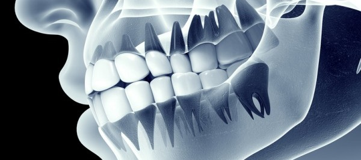
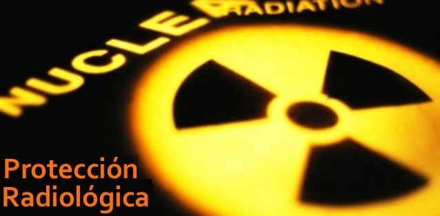

Cursos de Radiología - SEROFCA

Curso de Protección Radiológica de 24 horas
Curso de Protección Radiológica de 24 horas Odontológico (Dirigido al personal técnico, odontólogos e higienistas)
Taller: “Las diferentes visiones de la Mama” duración 16 horas
Curso “Protección Radiológica al Desnudo” duración 2 horas
Taller de emergencias Radiológicas 16 horas.